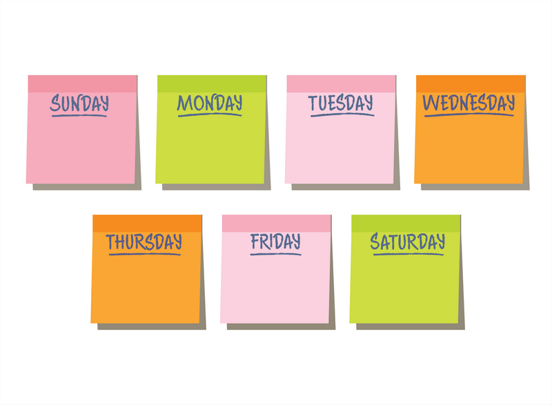
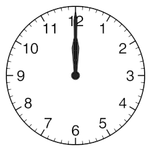

Наша книгарня-кав'ярня розташована в самому серці міста, в тихому, затишному районі, де можна відчути атмосферу спокою та тепла, незважаючи на міську метушню. Вона знаходиться на одній з центральних вулиць, оточена старовинними будівлями, що додають місцю особливого шарму. Тут ви зможете не лише знайти цікаву книгу, а й насолодитися чашкою кави, сидячи на веранді або в одному з комфортних куточків всередині, де кожен деталь інтер’єру створена для того, щоб ви відчували себе як вдома.
Наш заклад знаходиться в легкому доступі від основних транспортних вузлів міста, тому до нас легко дістатися пішки, на велосипеді або громадським транспортом. Однак, при цьому він ховається від гучних вулиць і жвавих площ, що дозволяє нашим відвідувачам насолоджуватися тишею і спокоєм, далеко від шуму та суєти. Це ідеальне місце для тих, хто хоче втекти від буденності і провести час у компанії гарної книги та смачної кави.

| Дні тижня | Час роботи | Примітки |
|---|---|---|
|  |  | |
| Деталі | Деталі | Деталі |
| Понеділок - Неділя | 9:00 - 20:00 | Перерва на обід: 13:00-14:00 |